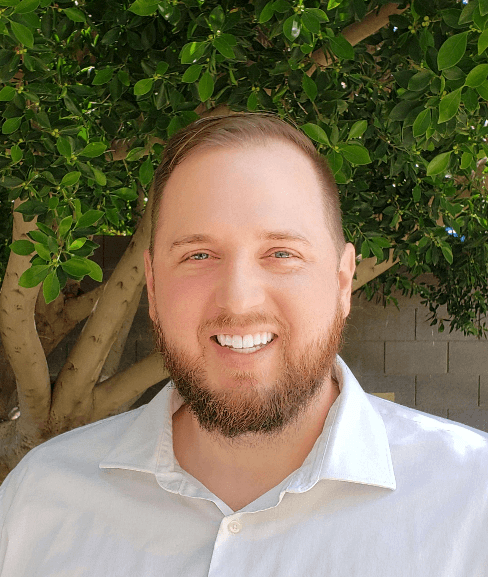

Garrett Heiner | WDD 130

I'm Garrett Heiner, from Phoenix, Arizona, a multi-faceted aspiring software engineer with a relentless curiosity that extends beyond coding. Sure, I have a passion for tackling complex technical problems and optimizing elegant solutions. But I believe in pursuing a diversity of interests that stimulate the mind and spirit.
Away from the keyboard, you may find me channeling my inner Mozart on the piano keys, embarking on a culinary journey through global spices and flavors, or getting lost in the pages of a high fantasy epic. I make time for spiritual reflection at the temple, and value moments spent connecting with family and friends.
I continuously seek out new frontiers of knowledge across many disciplines. Though my professional expertise lies in software engineering, I believe cultivating varied passions leads to a richer life experience. My goal is to pair my meticulous technical logic with an open and creative outlook. There are always new dimensions to explore if one maintains childlike curiosity.